The clock your Toyota should have come with.
OVERCLOCK replaces the factory dash clock in 90s Toyota trucks and plugs into the original connector. It still keeps time, then shows engine codes in plain English, gauges, GPS, tilt, weather and your solar, all in the stock spot.
YOUR TRUCK, FINALLY TALKING
A 90s Toyota tells you almost nothing until something breaks. OVERCLOCK sits in the clock spot and keeps an eye on everything, so you hear about trouble early, in plain English.
- Engine codes, in plain English. The moment a code sets, you see what it means, the likely causes, and a straight answer: keep driving, get it checked, or pull over now.Engine features need a 1996 or newer truck and the included Bluetooth adapter.
- Quiet until it matters. Overheating, low oil pressure, a weak alternator or a serious code takes over the screen with a warning you can't miss. Everything else stays small and out of the way.
- Every drive, on record. Speed, temps, voltages, location and more, logged every second to a card in the dash. Open it on any computer as a spreadsheet. Your data stays in your truck.
- Built-in GPS. Sets the clock on its own, tracks real miles, dims the screen at sunset wherever you are, and says hello when you cross a state line.
- Plugs into the factory connector. Pull the stock clock, plug this in. No cutting, no splicing, no visible change but the screen. Optional gauges and solar add a few easy wires.
- Grows with you. Turn every feature on or off, show as much or as little as you like, add gauges, solar and battery monitoring when you're ready, and update it over Wi-Fi.
FITS LIKE IT CAME FROM THE FACTORY
Pop out the factory clock, plug OVERCLOCK into the same connector, and click it into the same opening. Plug the included Bluetooth adapter into the diagnostic port under the dash, and you're done.
- Factory spot, factory plug. Uses the clock's own connector and power. No cutting, no splicing, no new wires to run.
- Engine adapter included. A small Bluetooth adapter plugs into the diagnostic port under the dash and stays there. That's the whole engine hookup.
- One knob does it all. Turn to scroll, press to select, hold to go back. Simple to use without taking your eyes off the road for long.
- Mount the knob your way. Stick it anywhere with the included housing and 3M VHB tape: no holes, no damage. Or drill one hole for a flush, factory-style look.
- A screen made for each dash. A bright 2-inch screen in the 4Runner and a larger 2.8-inch screen in the Tacoma, each in a bezel shaped to match the dash.
- Add gauges when you want them. Screw terminals on the back for temperature probes, a trans temp sender and an oil or fuel pressure sender. An expansion port for what comes next.
ONE KNOB, EVERY PAGE
Turn to move between pages. Click to open the thing you are looking at. Hold to go back. That is the whole manual.
Gauges
Four live gauges on one page, and you pick which four right there.
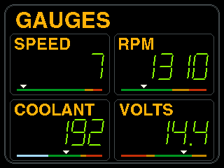
One gauge, big
Click a gauge and it fills the screen. Green when healthy, amber warm, red wrong.
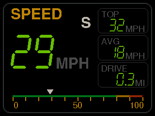
Health
Is anything slowly getting worse? Graphs of recent drives with a verdict in plain words.
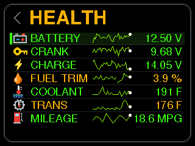
Temperatures
Outside, cabin, fridge, freezer, engine bay, cargo, trailer or water. Four probes, your choice.
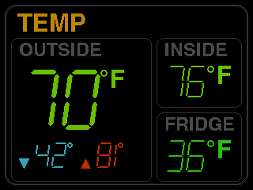
Weather
Three days of barometer and a storm warning before the storm.
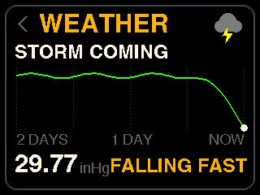
Tilt and camp
Pitch and roll, and a camp view that says which wheel to lift and by how much.
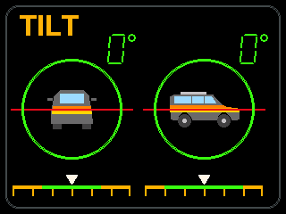
Solar
Watts in, amps, and the house battery's charge, from your solar gear.
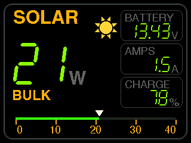
Trips and fuel
Two trip meters, the tank, range, and true MPG from the pump.
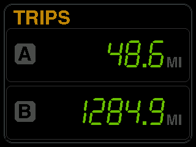
Starter battery
Resting volts, crank dip and charging, so a tired battery shows weeks before it strands you.
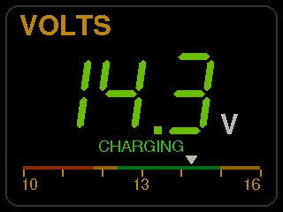
The retro clock
The factory clock, redrawn to the millimeter. Its buttons work, and it puts on a show.
Codes
Engine light, readiness for smog, stored codes, the live link. All clear here.
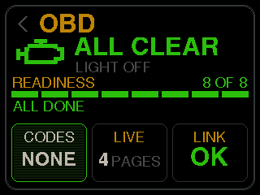
A code, taking the screen
Stop soon, P0115, coolant sensor. Snooze it or view what to check.
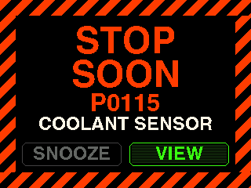
Overheat
The real number, red, and a marching border you cannot miss.
Fridge warm
Amber, with how warm. Hold to quiet it for the drive.
Towing
Transmission and coolant on a grade, with one verdict.
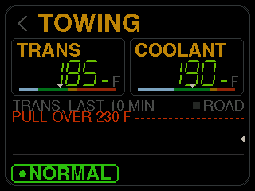
Starter battery
Alternator, crank dip and resting volts on one page.
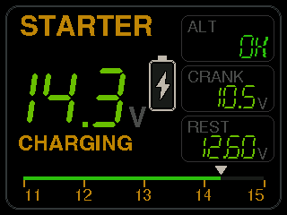
Records
Top speed, where and when. Twenty-four of them, and the states you have driven.
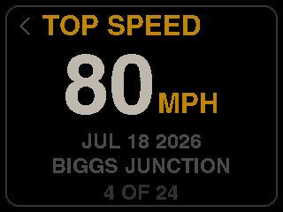
States
Seven of fifty so far. Click for the map.
0 to 60
Stop, then floor it. GPS does the timing.
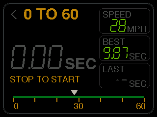
Stopwatch
And timers and alarms, because it is still a clock.
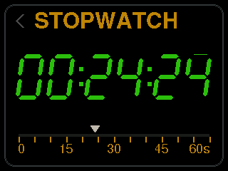
Games
Four of them, on the knob, for the campsite.
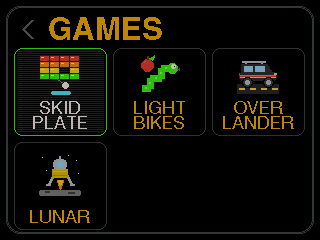
Apps
Settings, truck, games, travel, overland, tools.
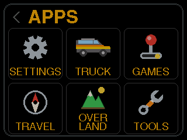
Settings
Pages, display, style, clock, units and on down the list.
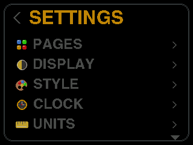
ENGINE CODES IN PLAIN ENGLISH
A cheap code reader shows you "P0115" and leaves you searching your phone in a parking lot. OVERCLOCK watches for codes the whole time you drive. When one sets, it tells you what it means, what probably caused it, and whether you can keep going.
- Caught the moment it happens. Codes are checked constantly, including pending codes, so you often know before the check engine light comes on.
- Plain English. Every code these trucks can set, with its name and what it means, in words you can read at a stop light.
- Where to look first. For every code, the four most likely causes, in order, before you spend a dime.
- Keep driving, or pull over? Every code is ranked: stop the engine, stop soon, drive with caution, get it checked, or emissions only. Only the serious ones take over the screen.
- The moment it happened, saved. Speed, rpm, temperature, load and fuel trims from the second each code set, saved in your log so you can look back anytime.
- Live gauges. Speed, rpm, coolant, intake air, load, throttle, timing, airflow, fuel trims and more. Pick the ones you want on screen.
- Transmission temperature. Read straight from the engine computer on 1999 and newer automatics. Older trucks and manuals can add a sender on the screw terminals.
- Oil or fuel pressure. Add an optional pressure sender and see the real number, not just a warning light. Low oil pressure gets the one alert that says stop the engine now.
- Will it pass smog? See which emissions self-tests your truck has finished, with a straight answer on whether it's ready. Clearing codes takes a long press, so it never happens by accident.
Engine features need a 1996 or newer truck and the included Bluetooth adapter.
WHAT IT WATCHES FOR
Whenever the key is on, it's watching. Anything that can't wait takes over the screen with a flashing hazard border. Everything else stays out of your way.
- Overheating. The real coolant temperature, not a factory gauge that sits in the middle until it's too late.
- Transmission heat. A warning before a hot transmission becomes an expensive one.
- Over-voltage. Instant warning when a failed regulator starts cooking your battery.
- Not charging. If the alternator quits, the voltage tells you before the lights dim.
- Serious engine codes. Codes that mean stop now or stop soon take over the screen, in plain English.
- Low oil pressure. With the optional sender, the one alert that says stop the engine now.
- Slow trouble. The HEALTH page tracks your battery, charging, coolant and fuel trims drive after drive and rates each one Good, Rising or Too High, so you see a slow slide weeks before it strands you.
- Fridge, freezer, storms and towing. Each with its own on/off switch, so you only hear about what you care about.
IT KNOWS WHERE IT IS
A built-in GPS works on every truck, any year. No cell signal, no account, no subscription.
- Always the right time. The clock sets itself from GPS satellites, time zone included. Cross into a new time zone and the hour changes on its own. You'll never set it again.
- Speed from the sky. True ground speed from GPS, even on trucks too old to report it.
- Every real mile. GPS and engine data checked against each other, so a parked truck never gains a mile and a tunnel never loses one.
- Altitude, climb and grade. Barometer and GPS working together, with your total climb and descent since you left.
- Dims at sunset, wherever you are. Sunrise and sunset worked out for your exact location, so it dims at the right minute in Yuma or Yellowknife. Or wire it to your headlights. Night mode protects your night vision.
- It notices the pump. Pull into a gas station and it asks if you filled up. It learns your stations, and every fill makes your mpg and range more accurate.
- Welcome to Oregon. Cross a state line and a welcome sign comes up, with "First time here" or how many times you've visited. It keeps track of every state, province and country you've driven.
- Places and home. Save your favorite places, get a welcome-home sign, and see each road trip day by day: distance, time and fuel.
IT WRITES EVERYTHING DOWN
A flight recorder for your truck. Every second the key is on, it saves a full snapshot to a memory card in the dash. No cloud, no account, no subscription. Your data stays in your truck until you download it.
- Every second of every drive. More than seventy readings saved every second: speed, rpm, every temperature, volts, position, altitude, fuel, tilt and more.
- Every start, every code, every tank. Battery voltage before each start and how far it dips while cranking. Every code as it sets and clears, with a snapshot of that moment. Real gallons against real miles.
- While it's parked, too. With the key off, it wakes on a schedule you choose, records battery, pressure, temperatures, position and solar, then goes back to sleep. It won't drain your battery: you pick the voltage where it stops waking.
- Room for years. An 8 GB card holds over ten thousand hours of driving: years, for most trucks. It's checked at every start, so a failing card can't quietly stop recording.
- Compare anything to anything. Open your logs in any spreadsheet and graph them. Did the thicker oil help? Did that fuel additive do anything? Now you have numbers instead of a hunch.
- Your drives on a map. Export any drive as a KML or GPX file and see your route, with speed, in Google Earth or your favorite mapping app.
- Privacy first. One switch turns off location logging for good, and the position columns stay empty. Your truck, your data, on a card you can hold.
YOUR PHONE IS THE BIG SCREEN
Turn on Wi-Fi and the dash makes its own hotspot, or joins yours. Scan the code on the screen and the phone page opens. Save it to your home screen and it works like an app. Nothing to download from an app store.
- Your files. A calendar of every day the dash recorded. Tap the days you want and download them in one file.
- Live data. Watch any engine reading as a moving graph, plus everything else your truck reports.
- Engine codes. Read, explain and clear trouble codes from your phone, with the snapshot of the moment each one set.
- Photos. Send your own pictures to the clock's slideshow.
- Updates over Wi-Fi. New features arrive as a file you send from your phone. The dash checks the file is complete, undamaged and made for your unit before it installs. You can also update from the memory card.
- Setup made easy. Wi-Fi networks, the state map, your fuel stations, solar gear and Bluetooth batteries, all set up from your phone instead of the knob.
Drives
Every day the dash recorded, on a calendar. Tap the days, download one file.
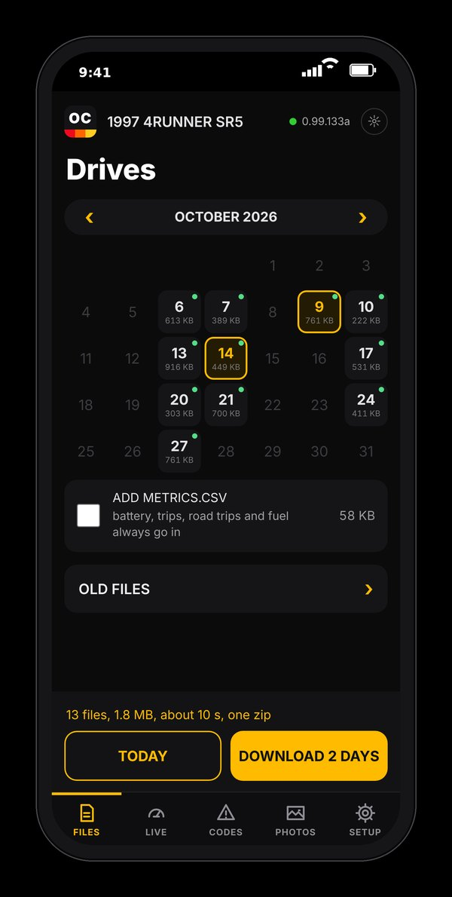
Live
Any engine reading as a moving graph, with the fuel trims and sensors below.
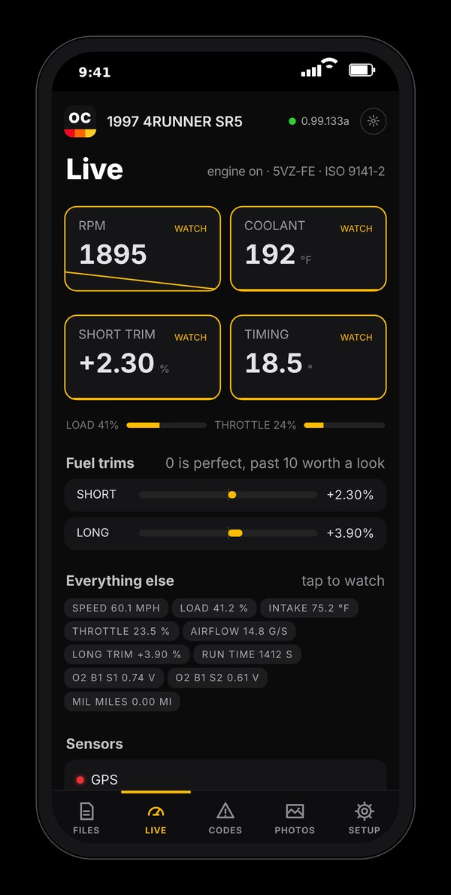
Codes
Each code with its name, what it means, and the snapshot of the moment it set.
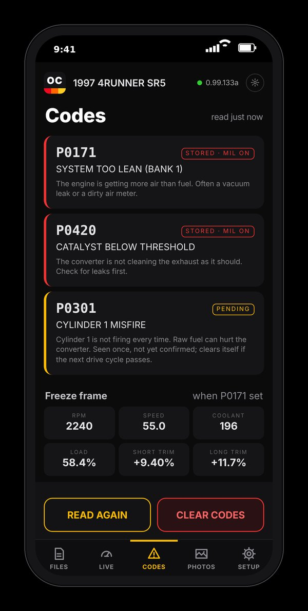
Photos
Send your own pictures to the clock's slideshow.
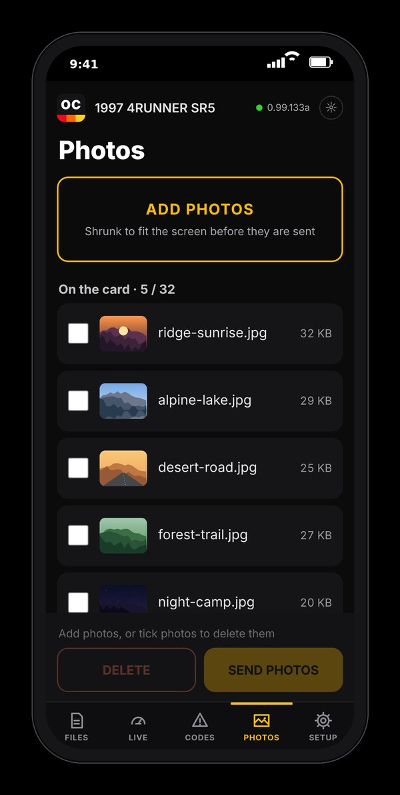
Firmware
Choose the update file, send it, and the dash checks it before installing.
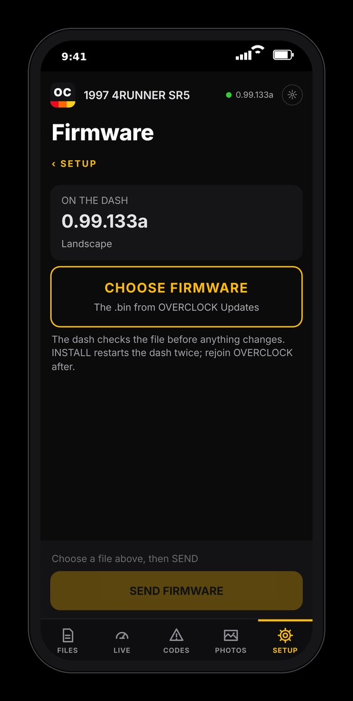
Setup
Networks, solar and batteries, maps and data, all from the phone.
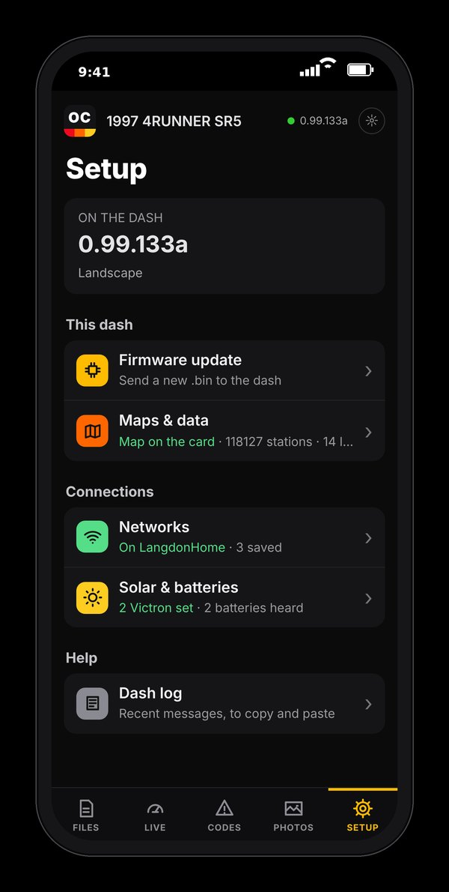
Networks
Its own hotspot, or your home and shop Wi-Fi, saved.
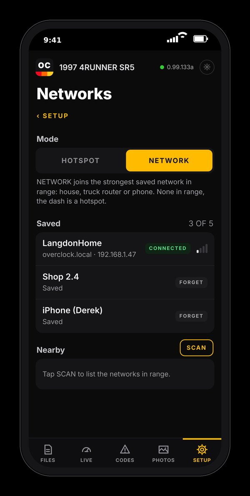
Solar and batteries
Pair a charge controller, a shunt and Bluetooth batteries; combine them into one bank.
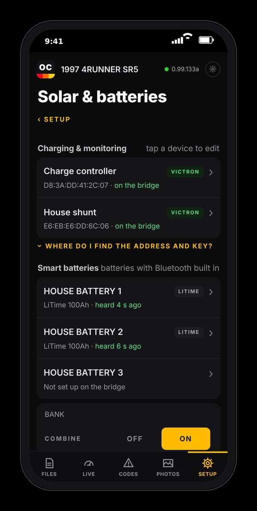
Maps and data
The state map for the border signs and the fuel station list, on the card.
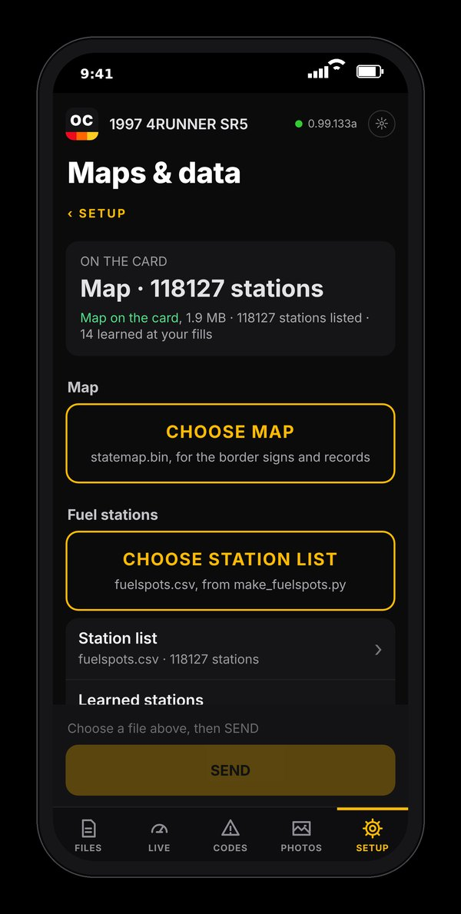
Dash log
The newest lines from the dash, to copy and paste when you ask for help.
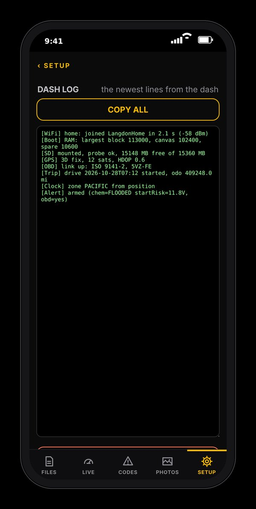
FOR CAMP AND THE TRAIL
The features that matter once the engine's off, and the solar gear you already own, right on your dash.
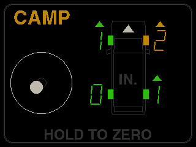
- Solar and house battery. Connects over Bluetooth to Victron solar controllers and battery monitors, and to many lithium batteries with Bluetooth built in. Watts in, amps out, charge left. More brands added over time.
- Several batteries, one bank. Link two or more Bluetooth batteries and the dash shows them as one big battery.
- Fridge and freezer watch. Too warm turns amber, two hours too warm turns red, and a pop-up tells you how long the food has been in trouble.
- Camp level. A top-down view of your truck showing how many inches to block up each wheel for a level tent, from the built-in tilt sensor.
- Weather coming. The built-in barometer watches the air pressure. A storm-sized drop in three hours gets you a heads-up, and it keeps watching overnight while parked.
- Sunrise and sunset. The next one, always in a corner of the clock.
- Starter battery health. Battery voltage at rest, while cranking and while charging, checked on every start, so a tired battery shows up weeks early.
- Records, games and fun. Top speed, highest elevation, steepest tilt, a GPS 0 to 60 timer, four retro games, a stopwatch, timers and alarms. A dash clock should be fun too.
PURPOSE-BUILT, NOT BOLTED TOGETHER
Not a phone holder, not a kit, not hobby boards wired together. A custom circuit board designed from a blank sheet for this one job, in a case made for your dash.
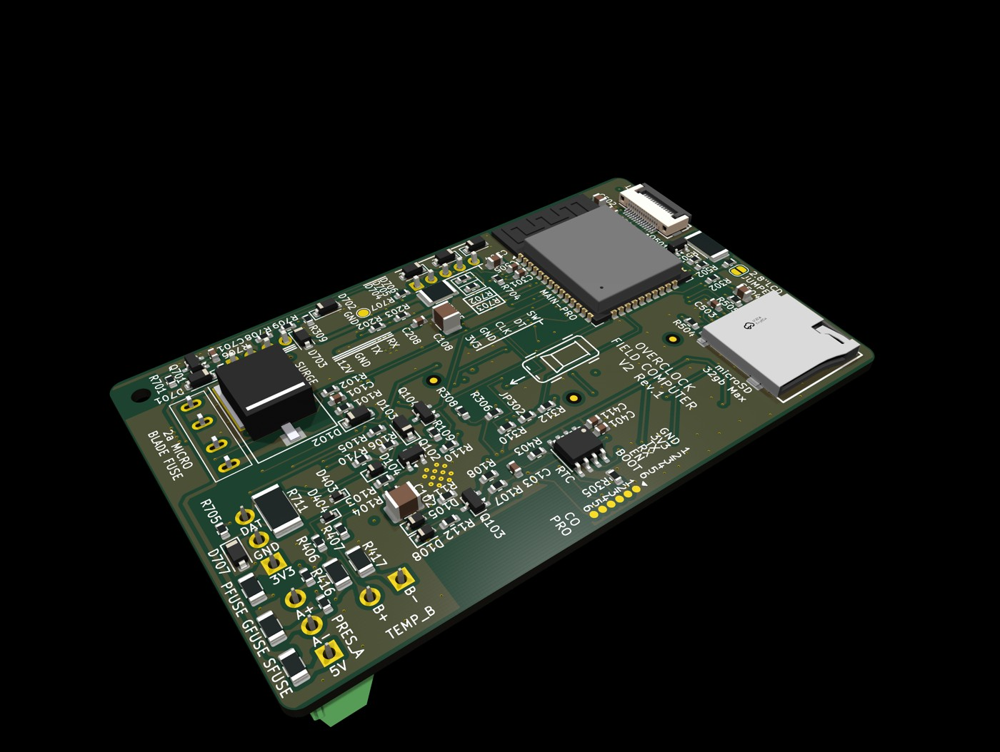
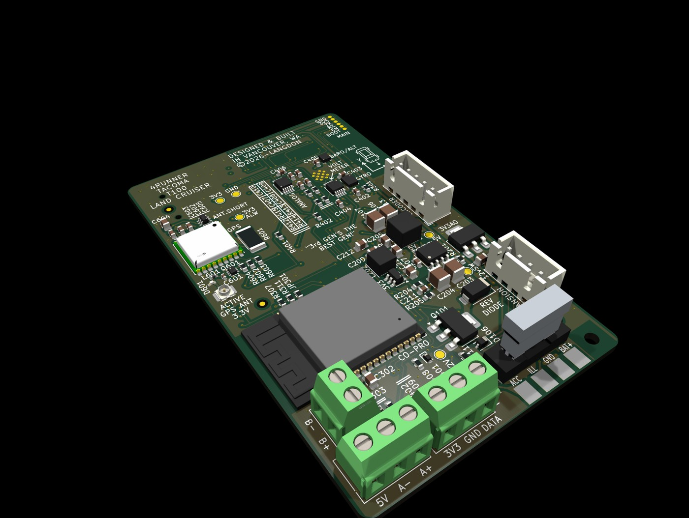
- A custom circuit board. Every part chosen for life in a truck: summer heat, winter cold and the voltage spikes a starter throws.
- Two processors. One runs the screen, sensors and logging. The other handles nothing but Bluetooth, so the screen stays smooth and the engine link stays steady.
- A bright, sharp screen. 2 inches in the 4Runner, 2.8 inches in the Tacoma. High contrast, readable in sun, dimmed right down at night.
- Built-in barometer. Weather trends, storm warnings, and altitude that stays honest by checking itself against GPS.
- Precise battery meter. Reads your battery to a hundredth of a volt, fast enough to catch the dip while cranking, so a tired battery or a lazy alternator shows up weeks early.
- Built-in tilt sensor. Pitch and roll on the trail, camp leveling that tells you which wheel to lift, and a record of your steepest climb.
- Protected. Its own fuse, surge protection, reverse-polarity protection, and a gentle shutdown when the key goes off. Nothing to wear out: no USB port, no coin cell battery.
- Designed in Vancouver, Washington. Designed, finished and tested by someone who drives one.
IT GROWS WITH YOU
Start with a clock. Add as much as you like. Every feature has an on/off switch, and there's room to add more gear later.
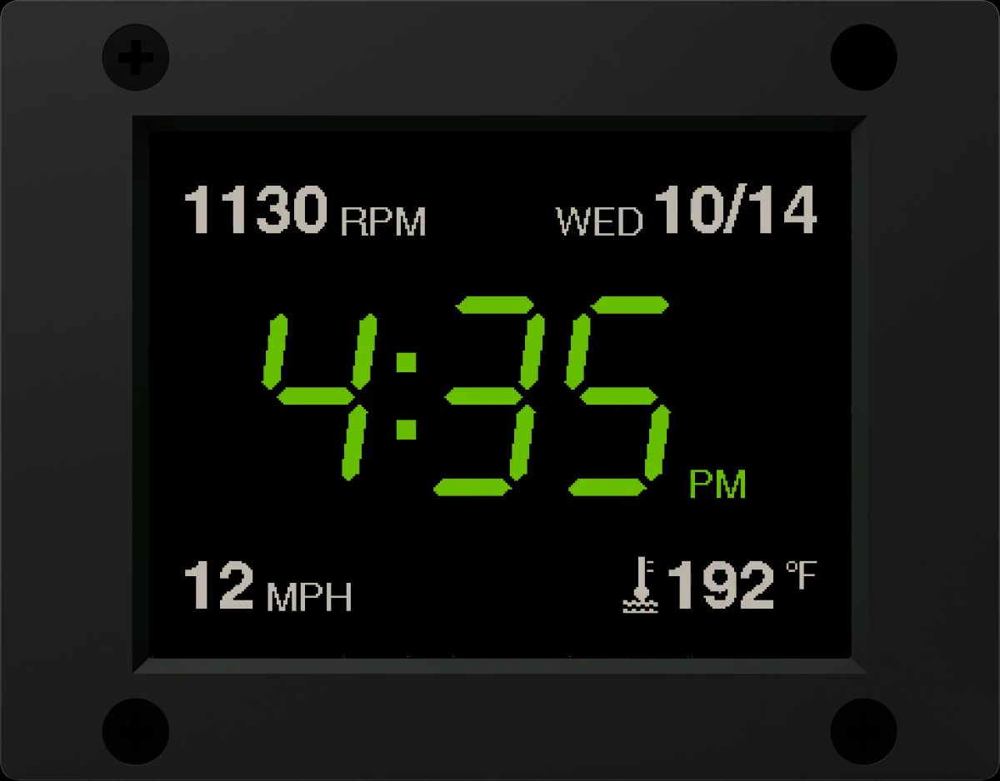
- Make it yours. Two clock fonts, your own colors, and four corners you fill with what you want: date, outside temperature, speed, heading, altitude, sunset, mpg, range, volts, coolant, rpm and more.
- As little or as much as you want. Every page and every alert has an on/off switch. Ready-made setups for Travel, Camp, Temps, Engine and Towing, or save three of your own.
- Add sensors over time. Up to four temperature probes, a transmission temperature sender and an oil or fuel pressure sender. Each one shows up as a gauge and in your logs as soon as it's connected.
- Add solar when you're ready. Pair a Victron solar controller or battery monitor, or a Bluetooth lithium battery, and the Solar page appears.
- New features over Wi-Fi. Updates arrive as a file you send from your phone. The dash checks every byte before it installs.
- Room to expand. A powered, fused port on the back for future OVERCLOCK add-ons.
WHAT IT WON'T DO
Trust is built here, not in the feature list.
- It doesn't tune or reprogram your truck. It only reads. The one thing it ever changes is clearing codes, and only when you choose to and hold the knob to confirm.
- It doesn't guess. If a sensor isn't answering, the screen says so instead of making up a number.
- No cloud, no account, no subscription. Your data lives on a card in your dash and goes nowhere unless you download it.
- No location logging unless you want it. One switch, and location never gets recorded.
- No live engine data before 1996. Pre-1996 trucks don't have the diagnostic port the adapter talks to. They still get GPS, weather, tilt and everything else. The engine pages just stay hidden.
- It doesn't replace your mechanic. It tells you what a code means and what to check first. A good mechanic still makes the final call.
WANT ONE?
OVERCLOCK is finished. Designed, built, and tested on the road. The first batch is small and limited, and we're starting with the people who reach out first.
Send a quick note with what you drive and we'll reply personally with where you stand and what happens next. No deposit, no commitment, no spam.
or write to hello@overclockdash.com
TRY THE REAL THING
The real firmware, in your browser. Every page, thirteen faults to inject, and a truck to tip.